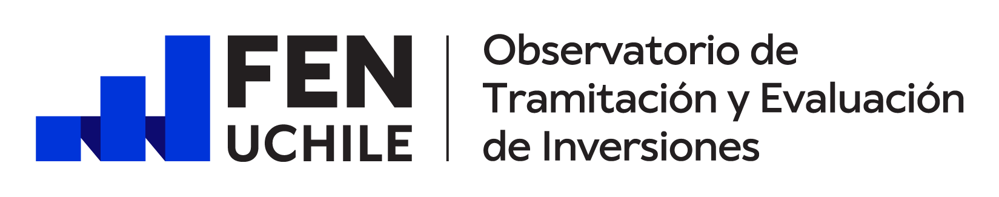

Proyectos en cartera
—

Acceso privado
Explora la cartera, compara plazos y revisa expedientes de demostración.
Acceso de demostración. Las credenciales ya están completadas.
Cartera activa · SEIA
Una lectura rápida del volumen, los plazos y la exposición de la cartera.
Inversión actualmente en evaluación
Suma de la inversión declarada en proyectos activos.
de los proyectos activos ya supera la mediana de plazo de su sector.
Evolución
Aprobados y rechazados, por trimestre.
Composición
Cartera completa del piloto.
Actividad reciente
Últimos proyectos presentados al SEIA.
Cartera
Compara plazos individuales con la mediana histórica de cada sector.
| Proyecto | Región | Sector | Tipo | Ingreso | Estado | Plazo | Inversión |
|---|
Benchmark histórico
Identifica dónde los plazos exceden el comportamiento típico del sector.
Principal foco de gestión
Calculando la mayor exposición de la cartera activa.
Exposición
Expedientes activos ordenados por días sobre su benchmark sectorial.
| Proyecto | Sector | Plazo actual | Mediana sector | Exceso | Inversión |
|---|
Comparación
Histórico 1993–2026 · 26.345 proyectos.
Capital expuesto
Proyectos actualmente en evaluación.
Revisión transversal
Pregunta sobre todas las carpetas del piloto y levanta señales de riesgo con respaldo documental.
Asistente de cartera
Las respuestas cruzan proyectos, hitos, documentos y benchmarks del piloto.
Haz una pregunta para obtener una respuesta trazable a las carpetas revisadas.
Análisis ilustrativo. Una señal no constituye una decisión de IRE ni reemplaza la revisión jurídica o técnica del expediente oficial.
Bandeja priorizada
Señales explicables para orientar la revisión, no conclusiones automáticas.